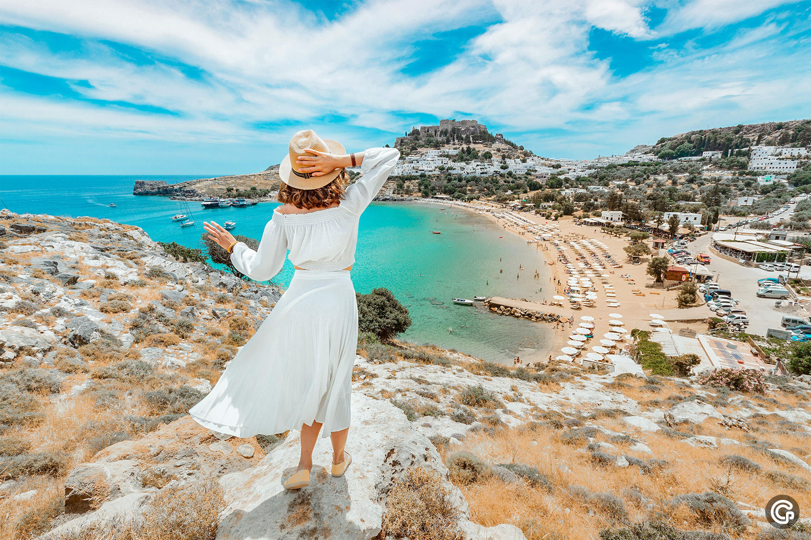
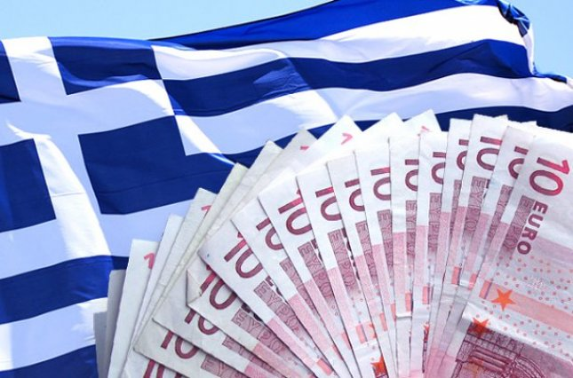
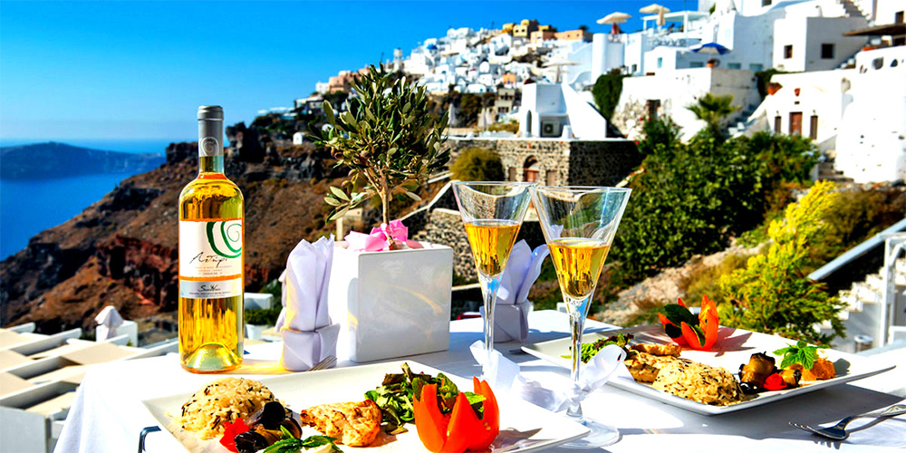
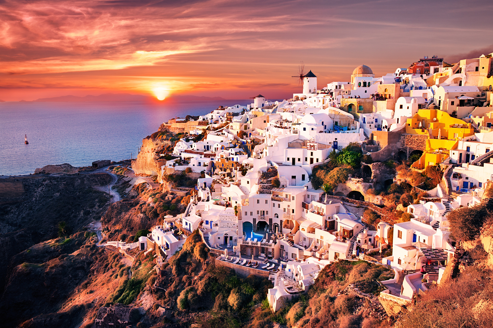
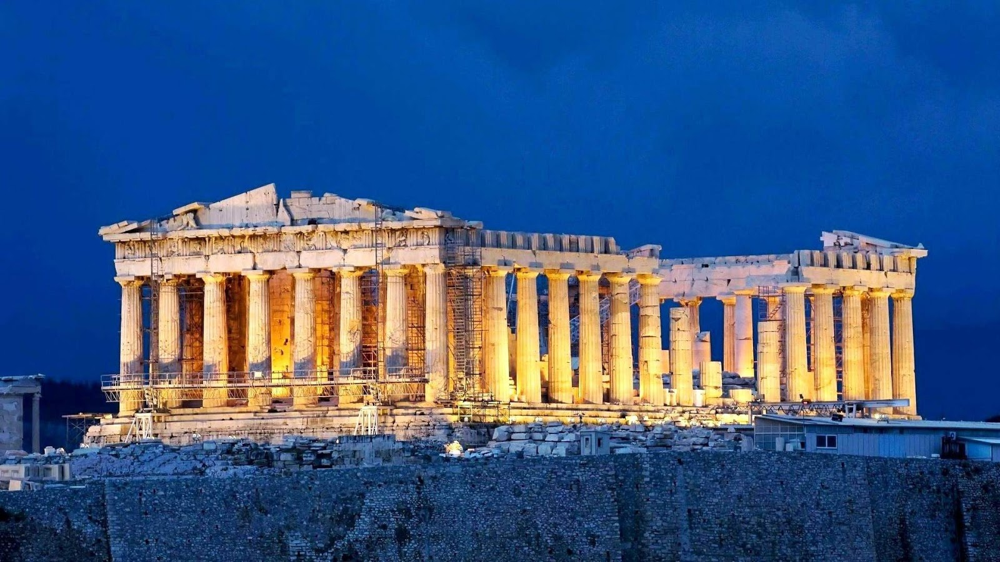

Греция
География
 Греция расположена в южной части Балканского полуострова и на прилегающих к нему и к побережью Малой Азии островах и занимает площадь 132 тыс. км², в том числе площадь островов 25,1 тыс. км². Граничит с Албанией, Северной Македонией, Болгарией и Турцией. Омывается Средиземным морем, в том числе: Ионическим, Эгейским морями, а южное побережье Крита — Ливийским морем. В состав Греции входит около 2 тысяч островов, на которые приходится почти 20 % всей страны.
Протяжённость сухопутных границ — 1110 км.
Территория Греции может быть разделена на три части:
материковая Греция, в состав которой входят Македония (Салоники, Флорина, Пелла, Кавала, Кастория, Халкидики и др), Фракия (Родопи, Ксанти и Эврос), Эпир (Теспротия, Превеза, Янина и др), Фессалия (Лариса, Магнисия и др) и Центральная Греция (Фтиотида, Фокида, Аттика и др). Также географически к этому региону можно отнести Ионические острова;
Пелопоннес — крупнейший полуостров Греции и очаг древнейшей цивилизации Европы, включает номы Аркадия, Лакония, Мессиния и т. д. Здесь же расположен знаменитый Коринфский канал, прорытый французской фирмой для греческого государства в XIX веке;
острова Эгейского моря, крупнейшими из которых являются:
Крит — пятый по территории в Европе (8259 км²);
Эвбея (3654 км²), соединён с континентом мостом, переброшенным через пролив Эврип;
Лесбос (1630 км²), расположен у берегов Турции.
Также здесь расположено множество групп небольших островов — Северные Спорады, Киклады, Додеканес.
Экономика
 Греция — индустриально-аграрное государство со средним уровнем развития производства. Государственный сектор даёт около половины ВВП. Высоко развиты оптовая и розничная торговля. Страна имеет разветвлённую банковскую систему. Широкое распространение получила деятельность страховых компаний, быстро растёт объём биржевых операций. Основные отрасли промышленности: текстильная (доминирует), химическая, нефтехимическая, туризм, пищевая и табачная, горная, бумажная, цементная, металлургическая. Развиваются электротехника, некоторые виды машиностроения, производство стройматериалов. Транспорт: автомобильный (осуществляет 60 % всех внутренних грузовых и пассажирских перевозок), железнодорожный развит слабо, морской (30 % внутренних и 90 % внешних грузовых и пассажирских перевозок), воздушный. Главные морские порты: Пирей, Салоники, Элефсис, Волос. Греция имеет третий по количеству судов торговый флот в мире. Функционирует 40 аэропортов, из них 22 международных. Крупнейший центр — аэропорт «Элефтериос Венизелос» в Афинах — один из самых современных в Европе и мире.
Греческая Кухня
 Наиболее характерным и древним элементом питания греков является оливковое масло, которое присутствует практически во всех блюдах. Оно изготавливается из плодов оливковых деревьев. Основными зерновыми в Греции являются пшеница и ячмень, использующийся в последнее время все более широко. Наиболее популярные овощи: томаты, баклажаны, картофель, зелёная фасоль, бамия, перец и лук. Мёд в Греции в основном цветочный — из нектара фруктов и цитрусовых деревьев (лимон, апельсин). Используется также тимьяновый и сосновый мёд. Мастика выращивается на острове Хиос в Эгейском море.
В греческой кухне травы и специи используются гораздо чаще, чем в других средиземноморских кухнях. Как правило, это сельдерей, орегано, мята, чеснок, лук, укроп, соль и лавровые листья. Другие популярные специи — это базилик, чабрец и семена укропа. Во многих греческих рецептах, особенно в северных районах страны, используются «сладкие» специи в сочетании с мясом. Например: корица или гвоздика. Греческие блюда характеризуются частым использованием мяты и мускатного ореха. Другие наиболее популярные ингредиенты для блюд — это баранина, свинина, оливки, выращенные в Мессинии, сыр фета, виноградные листья, цуккини и йогурт. В десертах преобладает мёд и орехи.
Другая отличительная особенность греческой кухни — обилие оливкового масла. Оно добавляется практически во все блюда и используется не только как ароматная приправа, но и во время термической обработки пищи. Ещё одним незаменимым компонентом является лимон.
Туризм
 Туризм в Греции — один из ключевых секторов экономики. С античных времен и до современности Греция является одним из основных туристических направлений в Европе. За 2018 год Грецию посетили 33 млн туристов, обеспечив, тем самым, около 25 % валового внутреннего продукта всей страны[1][2].
Греция всегда привлекала иностранных гостей своей богатой историей и традициями, но в последние десятилетия значительно вырос пляжный туризм. Число рабочих мест, предоставленных туристической отраслью и смежными отраслями, составило в 2006 году 659 719 места. Это 16 % от всех рабочих, занятых в экономике Греции.
В 2006 году министерство туризма Греции инвестировало в развитие индустрии отдыха более 38 млрд долларов, что на 8 млрд больше, чем в 2002 году. Кроме того правительство намерено поощрять развитие зимнего, лечебного, паломнического, аграрного и других видов туризма в Греции, что ещё больше увеличит поток отдыхающих. Новый логотип Греческой национальной туристической организации состоит из девяти кругов, символизирующих девять новых видов туризма, которые необходимо развивать в целях борьбы с сезонностью туризма в Греции. Новый лозунг, используемый при рекламе туризма в Греции: «англ. Greece, the true experience» («Греция — истинный опыт»)[3].
Афинский Акрополь
Афинский Акрoполь — акрополь в городе Афины, представляющий собой 156-метровый скалистый холм с пологой вершиной (ок. 300 м в длину и 170 м в ширину). Это было главное место для нахождения царя. Также внутри имелось немало храмов, где возносились молитвы греческим богам и воздавались жертвы. По настоящее время Афины — выдающийся памятник архитектурного искусства.
Хотя есть свидетельства того, что холм был заселён ещё в четвёртом тысячелетии до н. э., наиболее важные сооружения на этом месте, включая Парфенон, Пропилеи, Эрехтейон и Храм Ники Аптерос, были построены в V веке до н. э. по инициативе Перикла. Парфенон и другие здания были серьёзно повреждены при осаде венецианцами в 1687 году, во время турецко-венецианской войны (1684—1699), когда порох, хранившийся в Парфеноне, был поражён пушечным ядром и взорвался.
